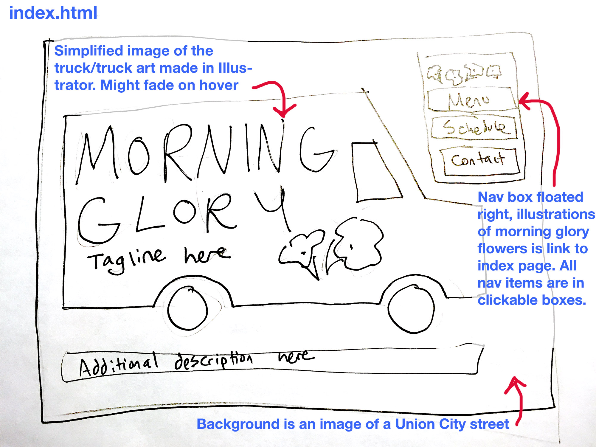
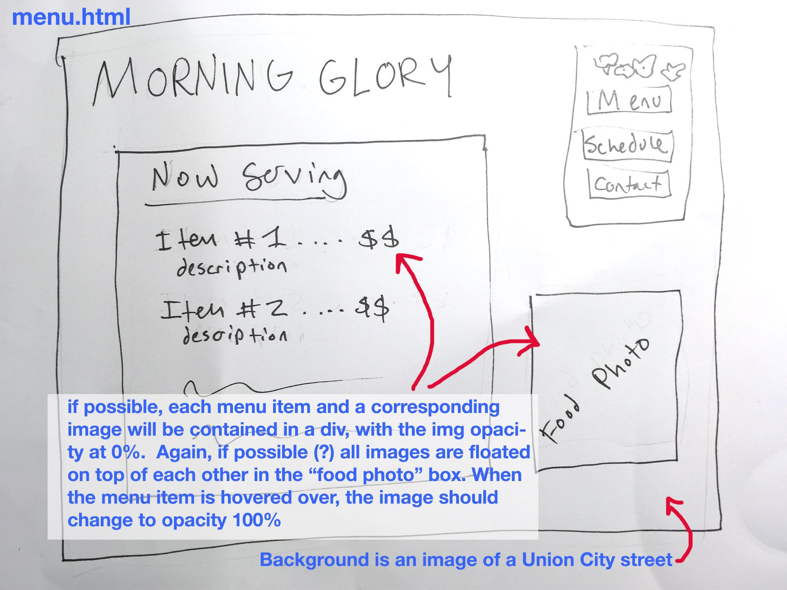
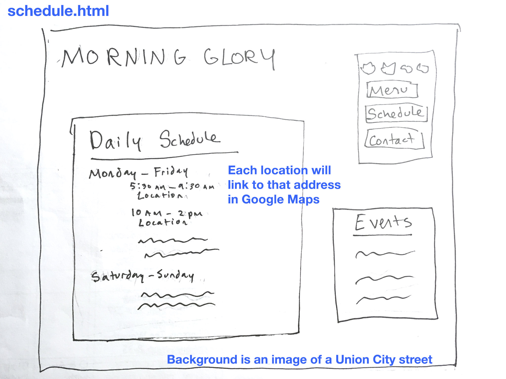

Jackie San Jose owns and operates the Morning Glory food truck in Union City, NJ. Catering to a mostly Cuban, working-class clientele, Jackie has become an asset in her community but has never established much of a web presence. Her customers know how to find her by word of mouth, but lately, Jackie has been looking to reach a wider audience. She hopes that by starting a website, she can draw larger interest to her truck and keep her customers better informed. Hopefully, she will be able to expand her business to multiple trucks and more cities.
Why do you want a website? Because I feel like it’s crucial to not only advertise my brand locally, but also reach a nationwide market.
What does your business do? My foodtruck gives people the option of having breakfast at any time of day, wherever they are. I give people food that brightens their morning commute. My truck puts a unique spin on the usual breakfast staples.
What are the requirements for your site? Obviously, the full menu. Social media links, pictures of the items to show customers not only how tasty the food looks, but how well we present it. Our daily location. Some contact info. That’s it.
What general “look” are you going for? Fun, unique, delicious. Not too trendy that my customers feel like this business isn't for them.
|  |  |  |
{kind=link}
{kind=link}
{kind=link}